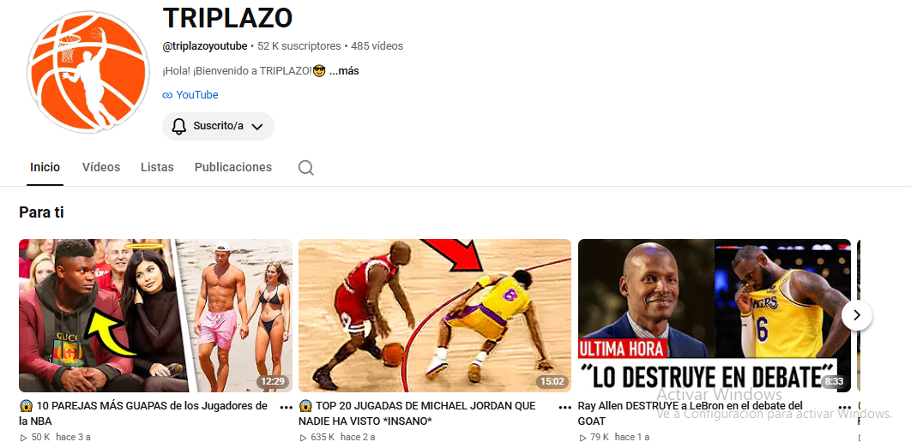
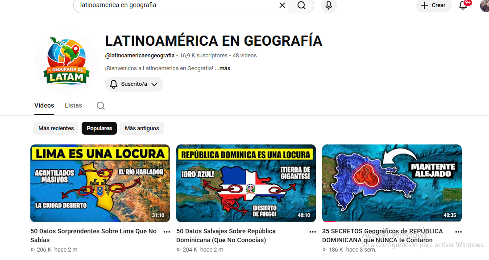
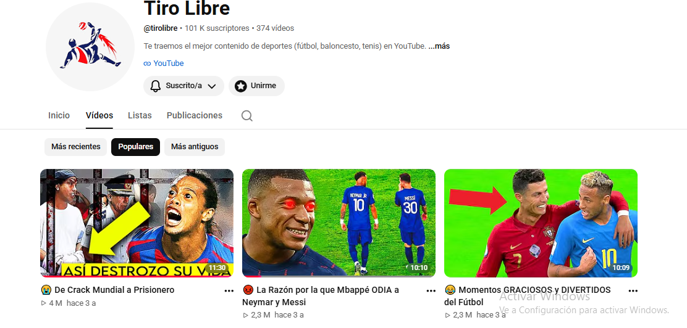
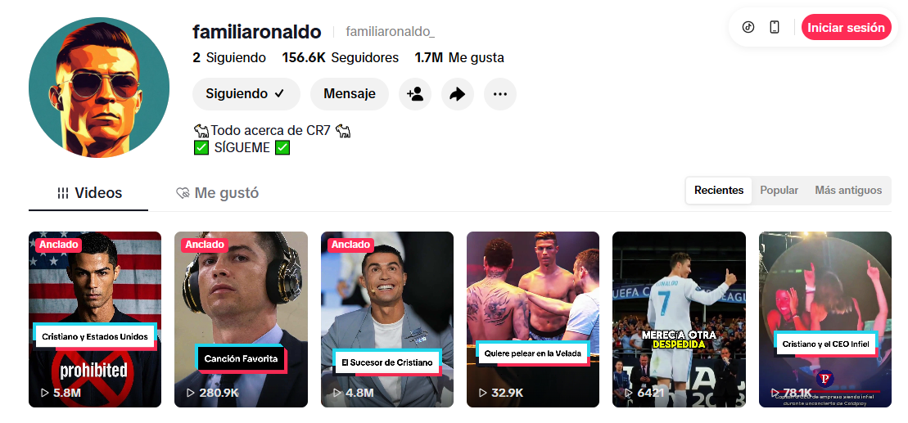

Transformo ideas en contenido que genera crecimiento, retención y resultados.
Soy editor audiovisual independiente. He dedicado más de cuatro años de mi carrera profesional a transformar ideas en contenidos claros, dinámicos y visualmente atractivos.
He trabajado con clientes pequeños y grandes en YouTube, TikTok e Instagram.
Seguidores generados
Suscriptores conseguidos
Horas editadas
Trabajé en la creación, edición y desarrollo de contenido para los canales de fútbol y baloncesto Tiro Libre y Triplazo, enfocados en formatos dinámicos y optimizados para YouTube y TikTok. A través de una identidad visual clara, un estilo de edición ágil y una narrativa accesible, logramos construir comunidades sólidas que llevaron a los canales a alcanzar más de 100k suscriptores en Tiro Libre y 50k en Triplazo.
Además, también he trabajado en la creación de videos estilo documentales en el canal "Latinoamérica en Geografía", actualmente con 16k suscriptores.
Video destacado Canal Tiro Libre


Trabajé con distintos clientes en la creación y automatización de canales de TikTok enfocados en contenido deportivo. Uno de los proyectos alcanzó 11k seguidores y otro superó los 150k seguidores.
Mi trabajo se enfocó en la edición, optimización del formato, ritmo narrativo y adaptación al algoritmo de TikTok.
The Reaper Fútbol Familia Ronaldo
He trabajado con diversos clientes en Instagram en la creación de videos con IA. Tengo la capacidad de crear avatares IA utilizando FreePik y hacerles hablar con HeyGen. Además, puedo crear banners utilizando Inteligencia Artificial con la finalidad de ahorrar tiempo.
Proyecto IA 1 Proyecto IA 2📧 andrescarrizo00@gmail.com
📱 +58 4246517181